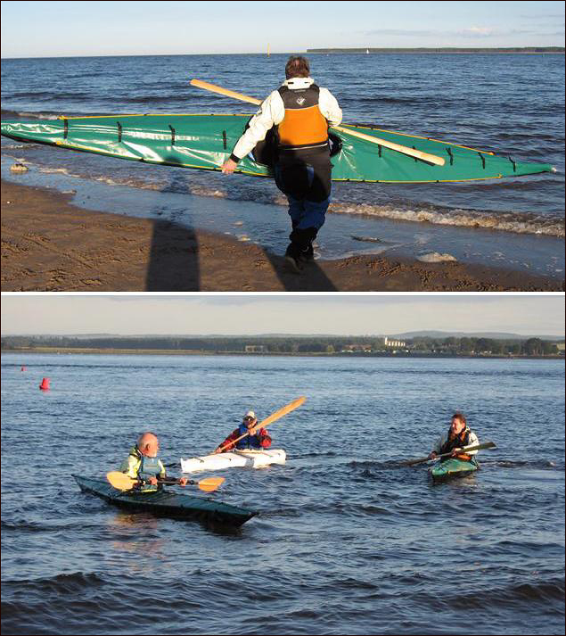

| Sea Tour 17 by Tom Love (UK) | Menu Previous Page Next Page |
|

Tom and Dave, from Scotland, have completed Sea Tour 17 folders. Use the (BACK) key to return. They have recently completed a 2 week / 550K trip down the Danube River. Below are some of Tom's comments about the trip. They opted for full length roll-up deck closures ( similar to dry bag closures) in lieu of zippers.
...."The sea tours performed brilliantly - there were lots of tricky landings and places where we had no choice but to lug the boats in and out of the water when fully loaded (although we were traveling as light as possible), and they took everything we threw at them. Our thick keel strips worked a treat - we didn't have any holes or tears at all, in spite of stones, boulders, and a rather tricky portage across a stone weir. For a distance of 514km - over 300 miles - with 13 paddling days, I think that's very impressive (I had one leak, but that was workmanship rather than design or materials)." ....The roll top deck joints were very effective - waterproof, but perfect for speedy packing and unpacking at the beginning and end of long days on the water. I think I mentioned that I'm planning to build a non folding Nikumi for my regular weekend touring, and I think I'll use roll tops just for the way they making packing a kayak so much easier. I'll never paddle a boat with hatches again!" |
|